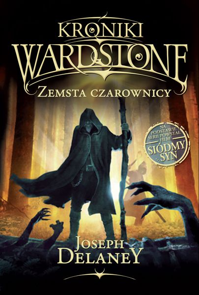

|  |
|
| opis książki
Thomas Ward, siódmy syn siódmego syna, zostaje oddany do terminu u miejscowego stracharza. Praca jest cieżka, mistrz surowy, tak więc wielu wcześniejszych uczniów nie podołało trudom nauki. Thomas musi się nauczyć przepędzać duchy, poskramiać czarownice i więzic boginy. Kiedy jednak niechcacy uwalnia Mateczkę Malkin, najgorszą wiedźmę w Hrabstwie, zaczyna sie koszmar... |